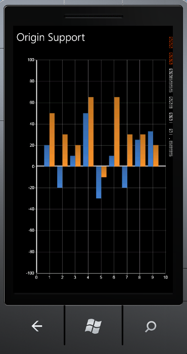

Origin axis support can be added to a chart using the following code samples.
Refer to the following code snippet for adding origin support in designer page using XAML code.
|
[XAML] <sync:Chart x:Name="chart1"> <sync:ChartArea> <sync:ChartArea.PrimaryAxis> <sync:ChartAxis Origin="0" ShowOriginLine="True" OriginLineStroke="White" OriginLineStrokeThickness="2" /> </sync:ChartArea.PrimaryAxis> <sync:ChartArea.SecondaryAxis> <sync:ChartAxis Origin="0" ShowOriginLine="True" OriginLineStroke="White" Interval="20" IsAutoSetRange="False" Range="-100,100" OriginLineStrokeThickness="2" /> </sync:ChartArea.SecondaryAxis> <sync:ChartSeries Type="Column"></sync:ChartSeries> <sync:ChartSeries Type="Column"></sync:ChartSeries> </sync:ChartArea> </sync:Chart>
|
Refer to the following code snippet for adding origin support in code behind page using C# code.
|
[C#] chart1.Areas[0].PrimaryAxis.ShowOriginLine=true; chart1.Areas[0].PrimaryAxis.Origin=0; chart1.Areas[0].PrimaryAxis.OriginLineStroke= new SolidColorBrush(Colors.White); chart1.Areas[0].PrimaryAxis.OriginLineStrokeThickness=2;
chart1.Areas[0].SecondaryAxis.ShowOriginLine=true; chart1.Areas[0].SecondaryAxis.Origin=0; chart1.Areas[0].SecondaryAxis.OriginLineStroke= new SolidColorBrush(Colors.White); chart1.Areas[0].SecondaryAxis.OriginLineStrokeThickness=2;
|

Figure 110: Origin Support in Column Chart